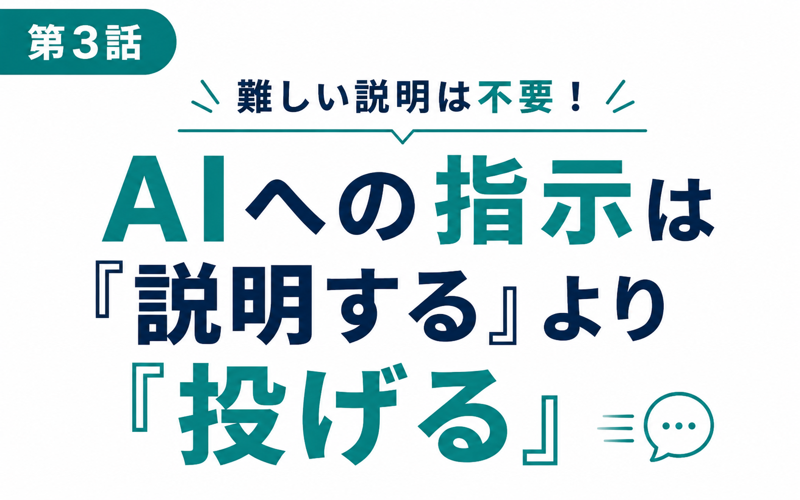
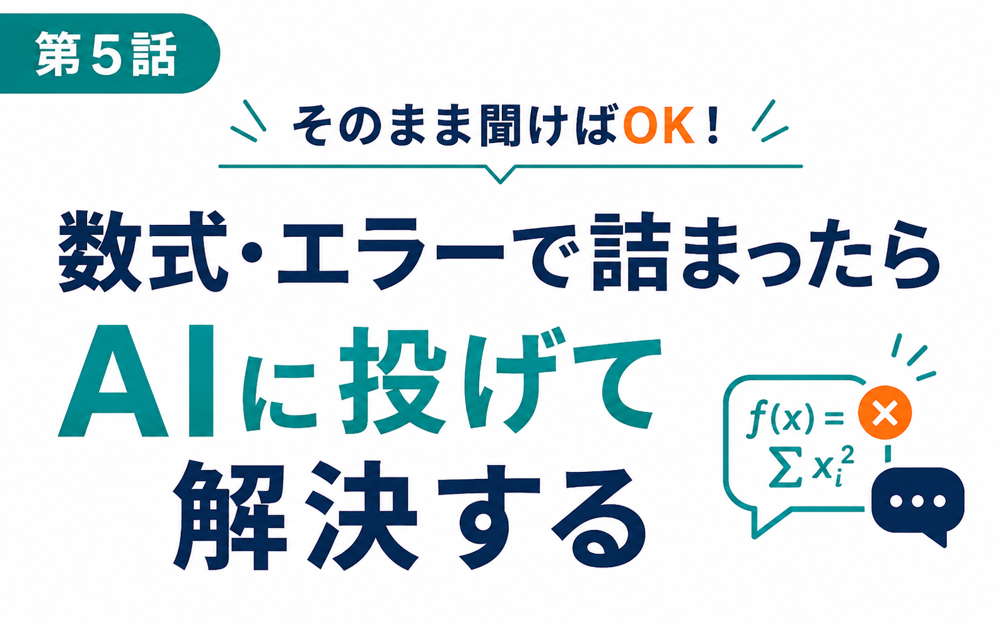

関数を100個覚える必要はありません。
プロンプトの書き方を勉強する必要もありません。
必要なのは、ただ「困ったときの聞き方」を知っているかどうか
それだけです。
「そうは言っても、自分の場合は違うんじゃないか」
そう思われたかもしれません。
では、少し聞かせてください。
もし少しでも詰まる瞬間があるなら、それはあなたの能力の問題ではありません。
Excelという道具の「使い方」ではなく、「困ったときの動き方」を、まだ知らないだけです。
多くの人は、Excelで分からないことがあると、まず検索します。
これ自体は間違いではありません。問題は、そこから先です。
出てきた解説は、たいてい別のケースを想定したもの。
関数の使い方は書いてあっても、「なぜ自分の表ではエラーになるのか」までは教えてくれません。
結果、いくつものページを開き、試し、また検索し直す。
気づけば20分、30分。ひどいときは1時間近く、たった一つのセルのために溶けていきます。
これが、日々の残業や「今日も終わらなかった...」という感覚の、正体の一つです。
真面目な人ほど、こう考えます。
「もっと関数を覚えれば、早くなるはずだ」
「Excelの本を読んで、体系的に勉強し直そう」
その努力は、決して無駄ではありません。
ですが、覚えるべき関数は数百種類。
すべてを頭に入れることは、現実的ではありませんし、その必要もありません。
そしてもう一つ、多くの人が誤解していることがあります。
「ChatGPTに聞けば早いのは分かっている。
でも、AIに的確に答えてもらうには、詳しい説明や難しいプロンプトの書き方が必要なんでしょ？」
――実はここが、一番の誤解です。
ChatGPTは、あなたが専門用語を並べなくても、Excelの状況をそのまま伝えるだけで、驚くほど的確に答えてくれます。
必要なのは「賢い質問の仕方」ではなく、「困ったときに、どういう順番で、何を伝えればいいか」という、ごくシンプルなルーティンだけです。
これが、この講座の考え方です。
Excelの操作や関数を一つひとつ暗記していくアプローチは、正直に言って時間がかかる上に、覚えたそばから忘れていきます。
そうではなく、
この「困ったときの動き方」そのものを、ルーティンとして身につけてしまう。
そうすれば、Excelの知識量に関係なく、次に何が起きても、自分の力でその場で解決できるようになります。
これは、検索スキルでも、プロンプトの専門知識でもありません。
「Excelで実際につまずきやすい場面」を題材に、初心者でもそのままAIに相談できる型を、体系立てて身につけていただくものです。
「ChatGPT×Excel はじめての時短ルーティン講座」は、全6本の動画で構成されています。
1本あたり数分〜十数分程度。難しい前置きは一切なく、Excelで実際に「あ、詰まった」と感じる場面を、そのまま題材にしています。


一つひとつの動画は独立していますが、順番に見ていただくことで、「困ったら、まずこう動く」という流れが、無理なく身についていきます。
この講座が目指しているのは「知識を増やすこと」ではなく、あくまで「分からないときに、自分で解決まで進められる状態を作ること」です。
正直にお伝えすると、この内容であれば、もっと高い価格をつけることもできたと思います。
ですが今回は、「まず試していただき、日々のExcel作業が本当に変わる感覚を知ってほしい」という思いから、1,980円という価格でご提供することにしました。
外での食事一回分ほどの金額で、これから何年も続くExcel作業の「詰まる時間」そのものを減らせるとしたら――決して高い投資ではないはずです。
ここまで読んでくださったということは、少なからず「このままでいいのだろうか」という思いがあったのではないでしょうか。
検索に費やす時間、エラーの前で固まる時間、それらは、今日申し込んでいただければ、明日からのExcel作業で少しずつ減らしていけます。
覚えることは、ほとんどありません。
必要なのは、正しい「動き方」を知ること。それだけです。
ぜひ今日から、その一歩を踏み出してください。
ここまで読んでくださり、ありがとうございます。
もしかすると、「本当に自分にもできるだろうか」と、まだ少し迷いがあるかもしれません。
ですが思い出してみてください。今このページを読むまでの間にも、Excelで何かに詰まって、検索して、時間を使ったことが、一度や二度ではないはずです。
その時間は、この講座を見終えたあと、少しずつ短くなっていきます。1回1回はわずかでも、1年、2年と積み重なれば、決して小さな差ではありません。
1,980円という価格は、その未来への、いちばん小さな一歩です。
ぜひ今日、その一歩を踏み出してください。